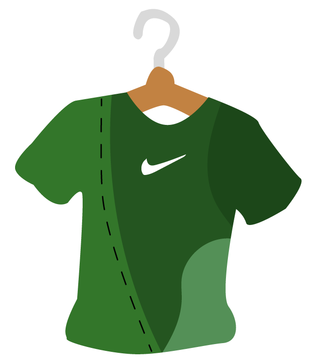
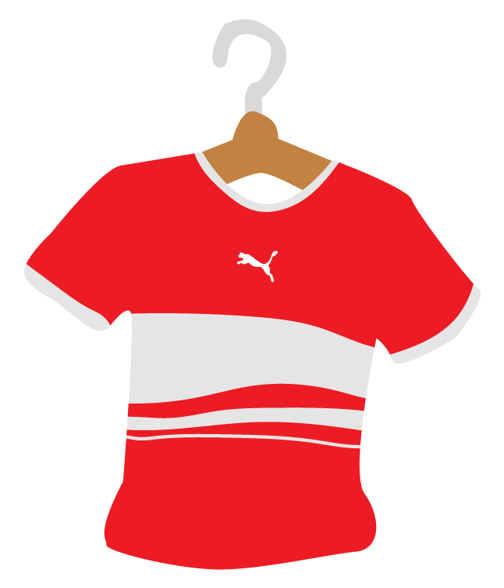
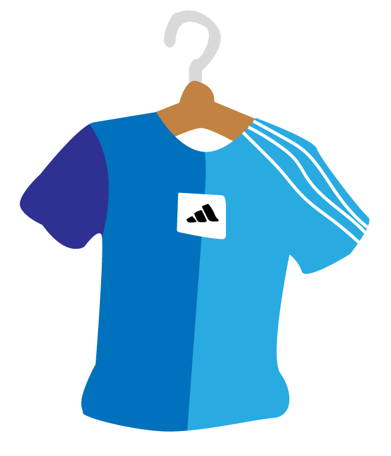

Mijn favorieten
Nike shirt groen
Dit groene Nike shirt is gerecycled van vier andere shirts. Deze vier shirts hadden allemaal de kleur groen maar dan in verschillende tinten. Wat dit shirt zo uniek maakt is dat het van de eerste lading gerepareede shirts is van het United Repair Center.
Puma shirt rood
Dit rode Puma shirt met witte strepen is gemaakt van hergebruikte stoffen die afkomstig zijn van verschillende rode shirts van diverse merken waaronder: Under Armour, Nike, Levi's en uiteraard Puma. Wat dit shirt zo mooi maakt is ondanks dat het van verschillende merken afkomstig is de kleur rood zo goed als overeenkomt met de anderen merken.
Adidas shirt blauw
Het laatste item is een blauw Adidas shirt. Dit shirt heeft een uniek verhaal. Zo komt de rechter donkerblauwe mouw van een Nike shirt uit Taiwan en de 2 andere kleuren blauw komen uit Italië afkomstig van een Lacoste shirt. De bekende 3 strepen zijn met de hand gemaakt, deze zijn uitgesneden van een ongebruikt laken uit België.
